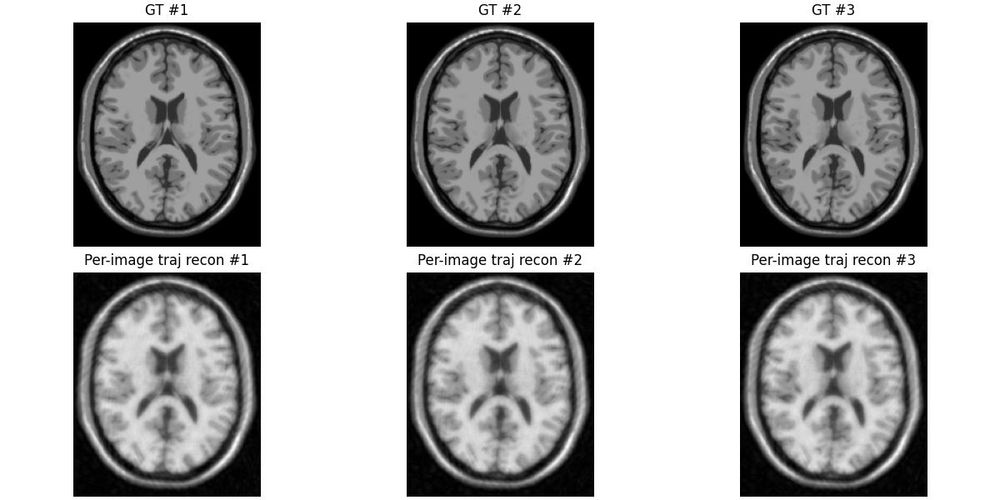
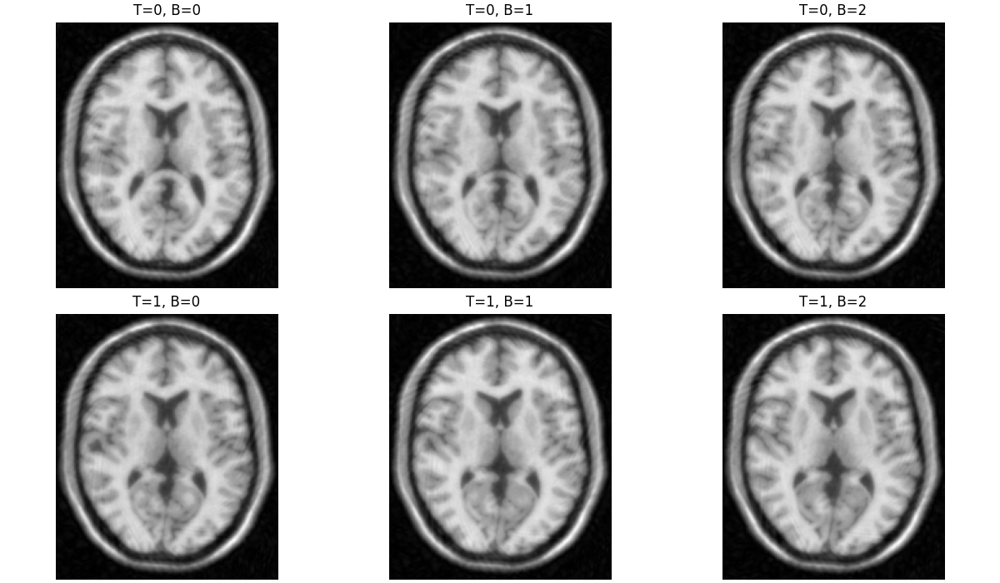

Note
Go to the end to download the full example code.
Batched and Stacked Reconstructions with PyGROG#
This example focuses on stack/batch behavior and trajectory handling.
We demonstrate three cases:
Same trajectory for all images in a stack (vectorized in one call).
Different trajectory for each image in the stack (one plan per image).
Two stack axes: one shared trajectory axis and one per-image trajectory axis.
import matplotlib.pyplot as plt
import numpy as np
from brainweb_dl import get_mri
from mrinufft import get_operator, initialize_2D_spiral
from mrinufft.density import voronoi
from pygrog.calib import GrogInterpolator
from pygrog.operator import SparseFFT
vol = get_mri(0, "T1")
Case 2: Different trajectory per image in one stack axis#
Different trajectory per image is handled in one stacked call.
coords_case2 carries a non-singleton stack axis (B), so GROG builds one
stacked plan and applies all trajectory variants in a single interpolate().
images_case2 = vol[92 : 92 + B]
angles = np.linspace(0.0, np.pi / 6.0, B, dtype=np.float32)
grog_case2 = GrogInterpolator(
shape=shape,
coords=coords_case2,
kernel_width=2,
oversamp=1.25,
image_shape=shape,
)
grog_case2.calc_interp_table(calib_cart, lamda=0.01, precision=1)
sparse_case2 = grog_case2.interpolate(ksp_case2, ret_image=False)
pre_w_case2 = np.asarray(grog_case2.plan.pre_weights)[:, np.newaxis, :]
sparse_case2_w = sparse_case2 * pre_w_case2
op_case2 = SparseFFT(plan=grog_case2.plan, smaps=smaps)
recon_case2 = np.abs(op_case2.adjoint(sparse_case2_w))
print(f"Case 2 (per-image trajectory): {recon_case2.shape}")
/home/mcencini/.conda/envs/pygrog/lib/python3.13/site-packages/mrinufft/_utils.py:67: UserWarning: Samples will be rescaled to [-pi, pi), assuming they were in [-0.5, 0.5)
warnings.warn(
/home/mcencini/.conda/envs/pygrog/lib/python3.13/site-packages/mrinufft/_utils.py:67: UserWarning: Samples will be rescaled to [-pi, pi), assuming they were in [-0.5, 0.5)
warnings.warn(
/home/mcencini/.conda/envs/pygrog/lib/python3.13/site-packages/mrinufft/_utils.py:67: UserWarning: Samples will be rescaled to [-pi, pi), assuming they were in [-0.5, 0.5)
warnings.warn(
Case 2 (per-image trajectory): (3, 217, 181)
fig, axes = plt.subplots(2, B, figsize=(4 * B, 6), constrained_layout=True)

Case 3: Two stack axes (T, B)#
Demonstrate 2D stacking: T (time/temporal) and B (trajectory variants).
coords_case3 is stacked along B only, while data carries (T, B).
T is treated as batch and B as stacked trajectories in a single call.
T = 2
B2 = 3
images_case3 = vol[96 : 96 + T * B2].reshape(T, B2, *shape)
angles_b = np.linspace(0.0, np.pi / 5.0, B2, dtype=np.float32)
grog_case3 = GrogInterpolator(
shape=shape,
coords=coords_case3,
kernel_width=2,
oversamp=1.25,
image_shape=shape,
)
grog_case3.calc_interp_table(calib_cart, lamda=0.01, precision=1)
sparse_case3 = grog_case3.interpolate(ksp_case3, ret_image=False)
pre_w_case3 = np.asarray(grog_case3.plan.pre_weights)[np.newaxis, :, np.newaxis, :]
sparse_case3_w = sparse_case3 * pre_w_case3
op_case3 = SparseFFT(plan=grog_case3.plan, smaps=smaps)
recon_case3 = np.abs(op_case3.adjoint(sparse_case3_w))
print(f"Case 3 (2D stack TxB): {recon_case3.shape}")
/home/mcencini/.conda/envs/pygrog/lib/python3.13/site-packages/mrinufft/_utils.py:67: UserWarning: Samples will be rescaled to [-pi, pi), assuming they were in [-0.5, 0.5)
warnings.warn(
/home/mcencini/.conda/envs/pygrog/lib/python3.13/site-packages/mrinufft/_utils.py:67: UserWarning: Samples will be rescaled to [-pi, pi), assuming they were in [-0.5, 0.5)
warnings.warn(
/home/mcencini/.conda/envs/pygrog/lib/python3.13/site-packages/mrinufft/_utils.py:67: UserWarning: Samples will be rescaled to [-pi, pi), assuming they were in [-0.5, 0.5)
warnings.warn(
Case 3 (2D stack TxB): (2, 3, 217, 181)

Total running time of the script: (0 minutes 6.079 seconds)